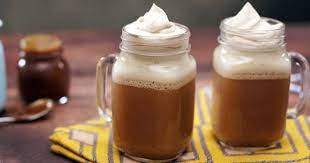

La cerveza de mantequilla es la bebida preferida de los magos más jóvenes. Puede
servirse tanto fría como
caliente y, en ambos casos, tendrá un efecto reconfortante y hará que entremos en calor. Aunque es cierto que
los miembros de la casa pueden llegar a intoxicarse con Butterbeer, la cantidad de alcohol que contiene tiene un
efecto insignificante en los brujos y magos.
La cantidad de alcohol, mucha o poca, que posee la cerveza de mantequilla está abierta a debate entre los
estudiosos y aficionados de esta bebida, pero la mayoría está de acuerdo en que contiene algo de alcohol. No
demasiada cantidad. De hecho, es más probable que tengamos una reacción debido a la cantidad de azúcar, antes de
que el alcohol ejerza algún efecto en el cuerpo.
Yo elegi este porque aparece en mi saga favorita.

Ingredientes
1 cerveza negra tipo Ale (también la hemos probado con lagers y nos ha gustado mucho)
35 g de azúcar moscovado oscuro
45 g de mantequilla sin sal a temperatura ambiente
2 yemas de huevo L
1/2 cucharadita de canela en polvo
1/4 cucharadita de jengibre en polvo
1/8 cucharadita de clavo de olor majado
pizca de nuez moscada
1/8 cucharadita de extracto Butterscotch (facultativo, pero recomendable)
Pasos
Preparamos la cerveza de mantequilla.
Dejamos preparado el vaso donde vamos a presentar la cerveza. En mi caso he usado un vaso de cerveza
negra de Luigi Bormioli.
En un cazo vertemos la cerveza y colocamos a calor medio.
Añadimos las especias junto con el azúcar moscabado, removemos y dejamos a fuego suave durante 3-4
minutos. La cerveza nunca debe llegar a ebullición, siempre debe mantenerse con un calor medio suave y
constante.
Batimos las yemas.
Bajamos a calor bajo y comenzamos a integrar las yemas en un hilo fino batiendo a la vez con unas
varillas para evitar que esta cuaje y nos podamos encontrar grumos.
Una vez que hayamos integrado toda la yema, removemos durante 1-2 minutos.
Añadimos la mantequilla y batimos con las varillas para integrarla por completo en la mezcla.
Retiramos del calor y vertemos la mezcla en el bol de la KitchenAid.
Batimos con la varilla a velocidad media alta durante 1-2 minutos. Nuestra finalidad es crear espumar
que simulará la espuma de la cerveza.
Servimos.
Vertemos la cerveza de mantequilla en un vaso o jarra.
Mientras que vertemos la cerveza, nos ayudaremos de una cuchara para evitar que la espuma caiga. Debemos
dejar esta para el final.
Una vez que tenemos toda la cerveza en el vaso, disponemos la espuma sobre esta.
Servimos enseguida.
esta receta fue copiada a esta pagina:
https://bake-street.com/cerveza-de-mantequilla-de-harry-potter/